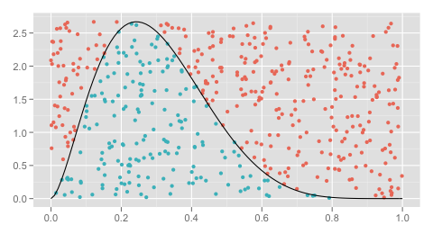

Método de aceptación-rechazo
El objetivo que se tiene es simular una variable aleatoria \(X\) con función de densidad \(f(x)\) para esto se hará uso de una variable auxiliar \(Y\) la cual tiene función de densidad \(g(y)\) y cumple que
\[ \frac{f(y)}{g(y)}\leq c\quad\mbox{para toda }y. \]

Algoritmo.
Paso 1. Simula \(Y\) con la densidad \(g\) y simular un número aleatorio \(U\).
Paso 2. Si \(U\leq f(Y)/cg(Y)\), haz \(X=Y\). de otra manera regresa al paso 1.
Una aplicación de este método es generar una variable \(X\) con distribución Beta(\(\alpha\),\(\beta\)) con \(\alpha\geq 1,\beta\geq 1\). Claramente en este caso la densidad de \(X\) está acotada superiormente por una cantidad \(M\). Por lo que si hacemos \(Y\) una variable uniforme en el intervalo (0,1)
\[ f_X(y)/f_Y(y)\leq M \]
y aceptaremos ese valor si un número aleatorio \(U\) es menor a \(f_X(Y)/M\).
Para implementar este método en R podemos usar el siguiente código.
Ejercicio.
Es bien sabido que si \(X\) es una variable Gamma(\(n\), \(\lambda\)) esta puede ser expresada como la suma de \(n\) variables exponenciales de parámetro \(\lambda\), además generar variables exponenciales se puede hacer de una manera sencilla ya que \(-log(U)/\lambda\) con uniforme(0,1) sigue esta distribución.
Ahora bien si \(X\) se distribuye Gamma(\(\alpha\), \(\beta\)) con \(\alpha\notin\mathbb{N}\) no resulta trivial generar. Una opción es generar un variable \(Y\) con distribución Gamma(\(\lfloor \alpha\rfloor\), \(\beta\)) y ver si es posible encontrar una constante \(M\) que cumpla con las condiciones para poder aplicar el método de aceptación-rechazo.